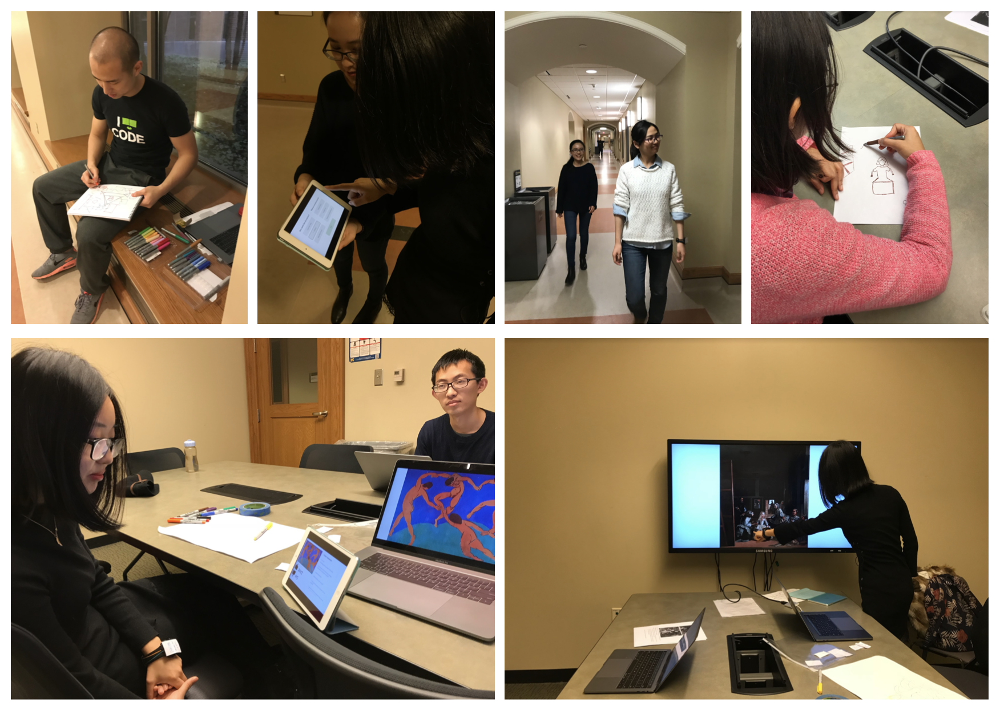

A Pervasive Design group project that took place over a span of 3 months (September 2017-December 2017).
Augmenting the museum visiting experience through pervasive solutions through 3 main features — information access, user engagement, and wayfinding.
The system provides an engaging and guided experience for art museum visitors through a scavenger hunt and a system composed of a smart bracelet, earphones, sensors, a user-facing application and a staff-facing application.
We hope that by following a route generated based on their interest, schedule, and learning about exhibits through interactive games or tasks, visitors can enjoy a less overwhelming, more engaging, personalized, and memorable museum experience. Museums will also have an easier way to enable interactivity for their exhibits in order to provide a more wholesome experience to their visitors.
Although lots of improvements have been done to help people have better experiences in the museum, based on empathy and through observations, we still feel that there are opportunities and areas to make it better, especially in the context where people would like to engage more in the “conversation” with various exhibits.
The goal of the project is to make the museum visit experience more accessible and engaging for museum visitors. As museums are often collections of artistic, cultural, historical, and scientific artifacts, the language used to describe the pieces tends to be technical and enigmatic. It poses as pain points for some visitors as they struggle to understand exhibitions. Because of the barriers, visitors can find the visiting experience to be less engaging and interesting. Our team aims to augment the brick and mortar visiting experience through digital means and personalization to expand the level of engagement for a wide set of population.
Interviews - What are user's motivation and preferences and what is their current experience?
Diary Study - further investigation on current experience, perception of surroundings, and on the spot reactions
The findings informed three dimensions that affect the user's experience: navigation, activity, and information.
User Enactment - through Wizard of OZ to test the limits of these findings
The system we propose has 3 key features: voice instruction for directions and information access, volumetric display of maps for locations and directions, and personalizable routes for scavenger hunt including customized activities for each exhibit
Ideally, our system is comprised of two main parts -- one that’s user-facing and another staff-facing. Museum staff is responsible for the system set-up before handoff to visitors.
A kiosk will act as the hub between staff and users.
As for the user-facing system, the following will be provided by the museum -- a smart bracelet for location tracking, activity guidance, and gesture sensing and a pair of earphones for voice instructions and auditory information.
To demo the system, we simulated a real museum visit experience with the system. We replicated the experience of registering for a route, following a smart audio guide, pulling up a projected map, and following instructions to complete activities. The stage setting includes a desk, a reflective prism device, and a printed painting attached on a foam board with a proximity sensors used to detect the user’s gestures that will then trigger corresponding actions from the system.